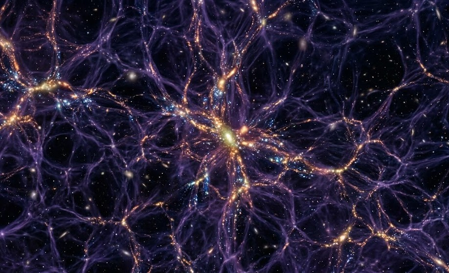
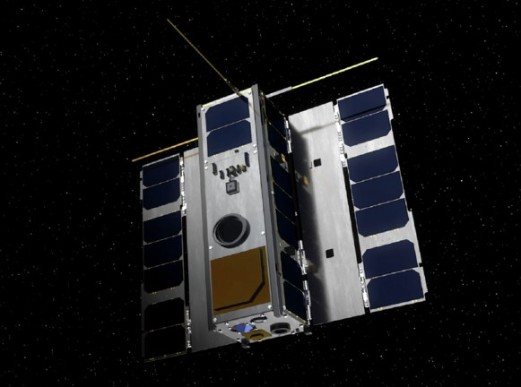
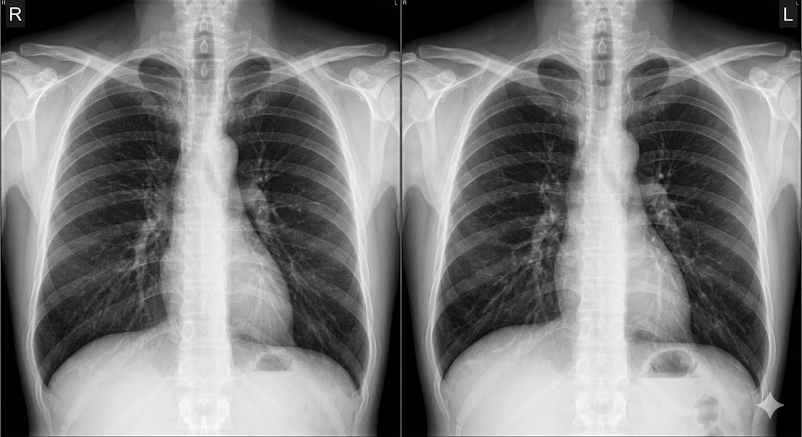
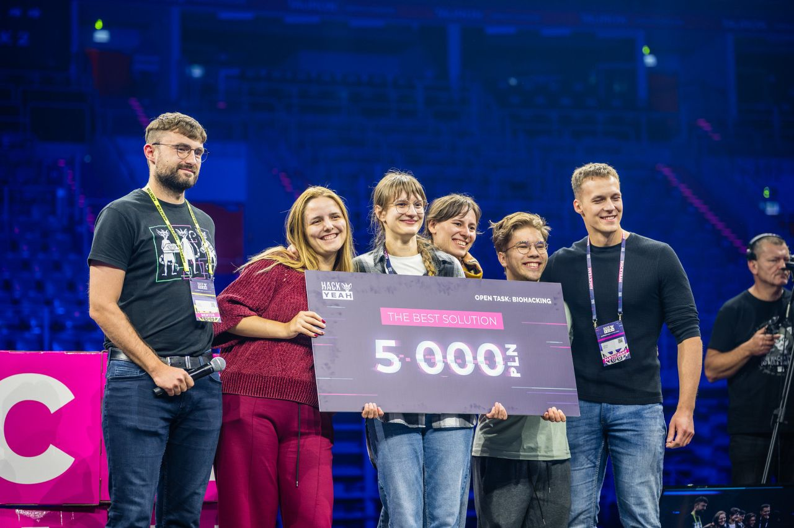
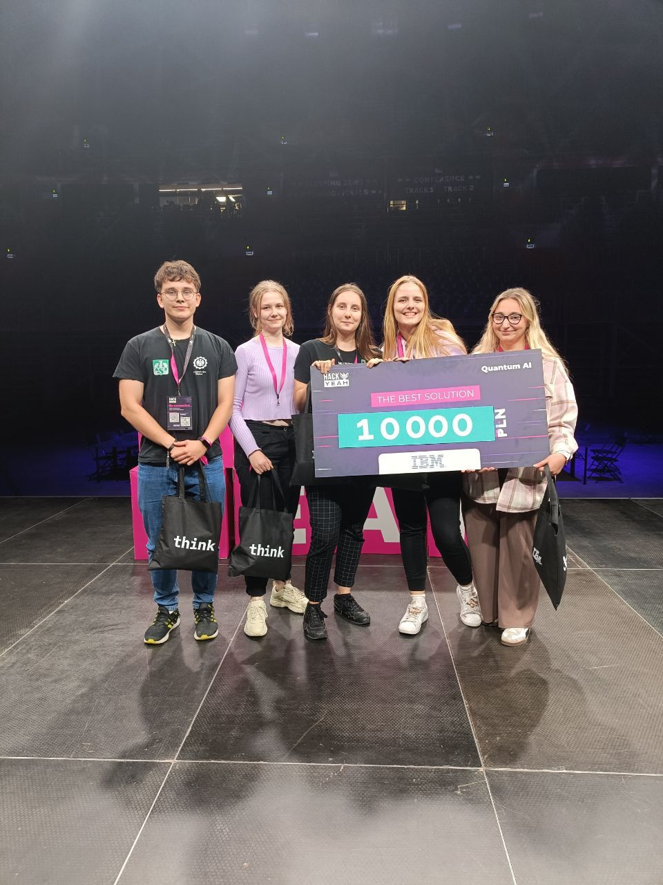
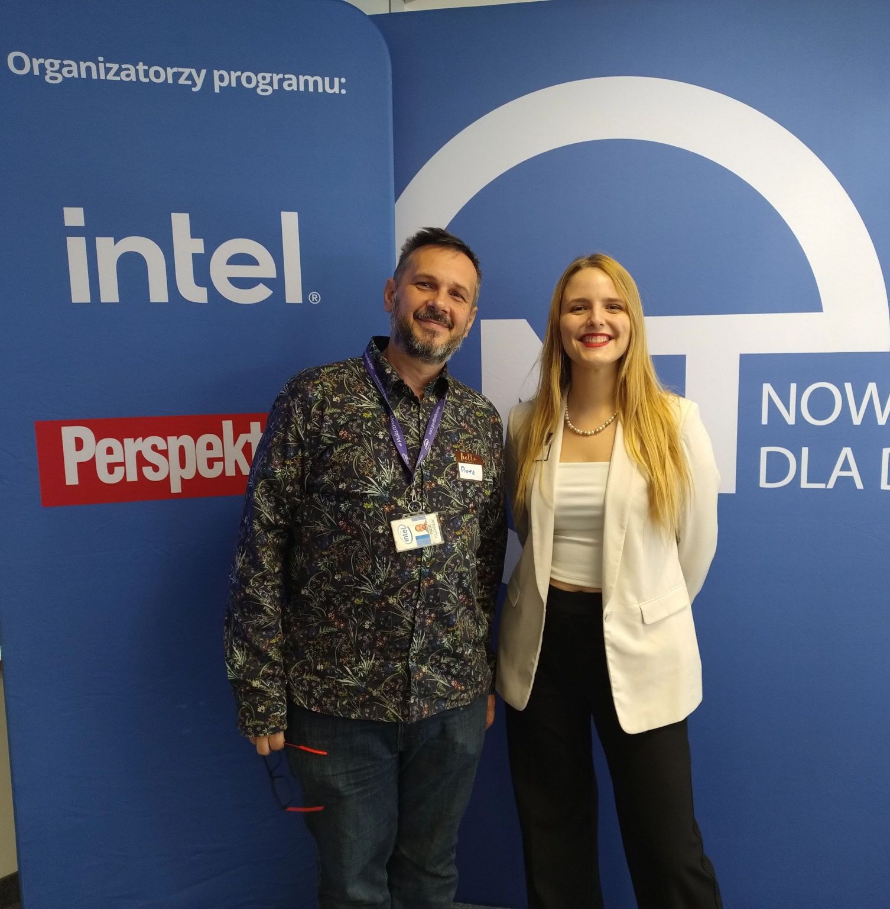
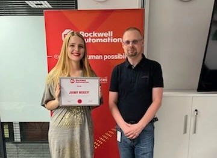

Machine Learning Engineer
Machine Learning Engineer with a focus on Continual Learning and Computer Vision, currently working on the super-resolution of satellite imagery. For the past three years, I have also been leading a Data Science Scientific Association, sharing my passion for AI with others. Outside the world of code, I am a beginner boulderer enjoying the learning process and an astronomy enthusiast.
KP Labs
R&D on deep learning for Earth Observation and super-resolution.
Rockwell Automation
Developed deep learning models for time-series anomaly detection in industrial sensor data, tackling concept drift and noise. Investigated and optimised end-to-end pipelines for high-frequency industrial signals.
KP Labs
Implemented neural network models for satellite data analysis. Investigated deep learning methods for anomaly detection in satellite imagery.
Data Science Scientific Association
Leading a 100-member group focused on AI in satellite imagery and medical data. Led interdisciplinary research projects and competitions.
Silesian University of Technology · Gliwice
Thesis: Continual learning for real-world data
Stockholm University · Sweden
PIANOFORTE/MIRAMARE intensive course: lectures and hands-on exercises in radiation biology.
Silesian University of Technology · Gliwice
Specialisation: Databases & Systems Engineering · Thesis: Continual Learning in Satellite Data Analysis

Analyzing time-series from a global network of optical magnetometers to search for correlated transient events potentially indicative of dark-matter interactions as part of an international research collaboration.

Bachelor Thesis & Ongoing MSc Project
Proposed and evaluated continual learning strategies to mitigate catastrophic forgetting in satellite telemetry
streams under shifting data distributions (non-stationary environments).
Project continued as part of MSc studies; results have been presented as posters at international conferences
(ML in PL 2025, GHOST Day 2025) and a paper is in preparation.

Developed deep CNN models for automatic aortic arch calcification classification in X-ray images, including explainable AI analysis using LIME. Scientific paper in preparation.
Multiclass classification of histopathological images of lung and colon tissues.
New projects are on the way. Stay tuned!

First Place – Biohacking Category
Developed a health-focused desktop app addressing posture and eye strain using computer vision.

First Place – QuantumAI by IBM Category
Developed an AI-based approach for quantum computing problems using Qiskit.

Mentoring & Scholarship
National scholarship and mentoring initiative supporting women in technology and data science.

Mentoring & Scholarship
Awarded a scholarship to support the development and research of the engineering thesis.
First Place
Awarded first place for designing and implementing solutions involving Python-based data analysis, NoSQL
databases, and algorithmic problem-solving.
Since then, mentoring new participants each year, providing guidance on data analysis, algorithm design,
and project development strategies.